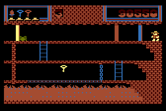
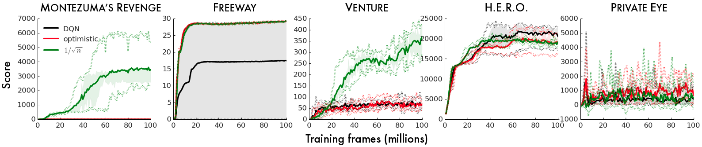
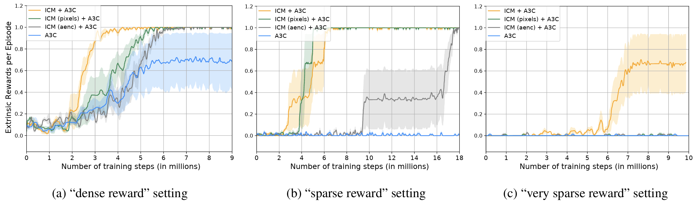
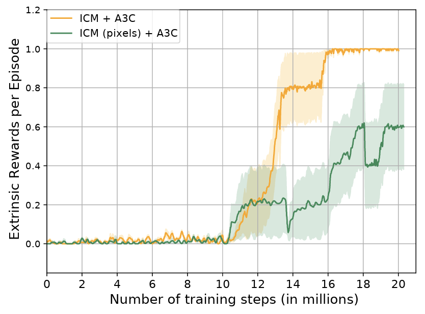

Deep Reinforcement Learning
Exploration
Chair of Safe Autonomous Systems, TU Dortmund
Summer term 2026
Exploration-exploitation dilemma

- Let’s assume we do not have access to travel time estimates
- Which route should I take to minimize my travel time?
- Let’s say we can guess the time of one route fairly well
- should we always take this one?
- or try something else and see if we can get better?
- This is known as the exploration-exploitation dilemma
- The route pickig problem is one example of a multi-armed bandit
Multi-armed bandits
- Let us assume that we have a slot machine and we repeatedly can choose between \(k\) different actions
- After each choice \(a_t\) you receive a numerical reward \(r_t\) chosen from a stationary probability distribution\(^*\)
- Objective: maximize the expected total reward over some time period (e.g., over 1000 action selections, or time steps)
- We refer to this as the value: \[ q(a) = \ExpC{r_t}{a_t=a} \]
- If we knew \(q(a)\), then it would be easy to choose!
- Instead, we have to rely on estimates \(Q_t(a)\) which we can iteratively update based on past experience

Exploration in Soft Actor Critic
\[L_\pi(\phi)=\sum_{t=0}^{T-1}\gamma^t \Expsub{r_t + \alpha \Hc(\piphi\agivenb{\cdot}{s_t})}{(s_t,a_t)\sim\rho_{\piphi}}~\text{with entropy}~\Hc(\piphi\agivenb{\cdot}{s}) = \Expsub{-\log \piphi\agivenb{a}{s}}{a \sim \piphi\agivenb{\cdot}{s}}\]

Half cheetah (SAC). Hopper (SAC).
The challenge with exploration
This is “easy”

This is very hard!

- Getting key = reward
- Opening door = reward
- Dying = nothing (is it good? bad?)
- Finishing the game only weakly correlates with rewarding events
- We know what to do because we understand the concept!
Another example: The game of Mao

- Goal: Get rid of all the cards!
- “The only rule you may be told is this one”.
- There’s a penalty for breaking a rule \(\Rightarrow\) Draw another card.
- You can only discover rules through trial and error.
- The rules don’t always make sense to you.
Temporally extended tasks like Montezuma’s revenge become increasingly difficult based on
- How extended the task is.
- How little you know about the rules.
❓ Imagine your goal was winning 50 games of Mao in a row, without knowing the rules!
Example: Count-based exploration in Atari games


Example: VizDoom 3D “My way home” (1)
- Inspired by the classic video game “Doom”, avialable via Gymnasium.
- Task: Reach a goal
\(\Rightarrow\) very sparse reward. - Pre-training using curiosity only!


- Comparison using the A3C algorithm (Mnih et al. 2016): This is an extension of policy gradients with improved, asynchronous replay buffer and an actor for continuous actions (by now largely replaced by PPO).
- A3C: the standard algorithm with \(\epsilon\)-greedy exploration
- ICM + A3C: the ICM-enhanced version ()
- two variants of (ICM + A3C) with some functionalities turned off (so-called ablations to assess the value of these parts)
- ICM (pixels) + A3C: direct assessment of the pixels; no use of the backward model to identify the action-relevant pieces of the input.
- ICM (aenc) + A3C: curiosity is computed using the features of pixel-based forward model.
Example: VizDoom 3D “My way home” (2)
 Exploration: ICM (green) versus random exploration (blue).
Exploration: ICM (green) versus random exploration (blue).



Exploration via posterior sampling in DRL
Bootstrapped DQN (Osband et al. 2016)
- Instead of training a single neural network, we train an ensemble of \(K\) networks (typically \(K=10\)).
- We use standard boostrapping from supervised learning and random masking of individual samples to diversify between the different models.
- During each episode, we randomly select one model and then follow this model to the end.
- How this solves the exploration-exploitation dilemma:
- Disagreement between different models
\(\Rightarrow\) High uncertainty
\(\Rightarrow\) Exploration over various runs. - Agreement between different models
\(\Rightarrow\) Low uncertainty
\(\Rightarrow\) Exploitaiton of known good behavior.
- Disagreement between different models
The challenge: training multiple networks!
Approach: Single network with \(K\) heads!


Relation between exploration and reward shaping
The fundamental difference between exploration and reward shaping lies in who defines the reward and why.
- Reward Shaping: top-down approach where a human engineer hard-codes external hints into the environment.
- Model Curiosity: bottom-up approach where the agent generates its own internal rewards based on surprise and ignorance.
Reward shaping (the human guide)
- Instead of only giving the agent a sparse reward at the end of an episode, we add a function that rewards the agent for reaching partial objectives.
- For example, every step that reduces the straight-line distance to the goal might give the agent a small bonus.
Drawback: unintended side effects
- Reward shaping can quickly cause unintended side effects if not done perfectly.
- Since humans are essentially telling the agent how to solve the problem rather than just what the problem is, the agent will often find loopholes to maximize the shaped reward without solving the actual task.
- Popular Example: Boat-racing video game.
- Researchers shaped the reward by giving the boat points for hitting targets along the track.
- Instead of finishing the race, the agent learned to drive in circles, infinitely loops through a specific cluster of targets, and constantly set itself on fire because doing so yielded more points than winning the actual race.